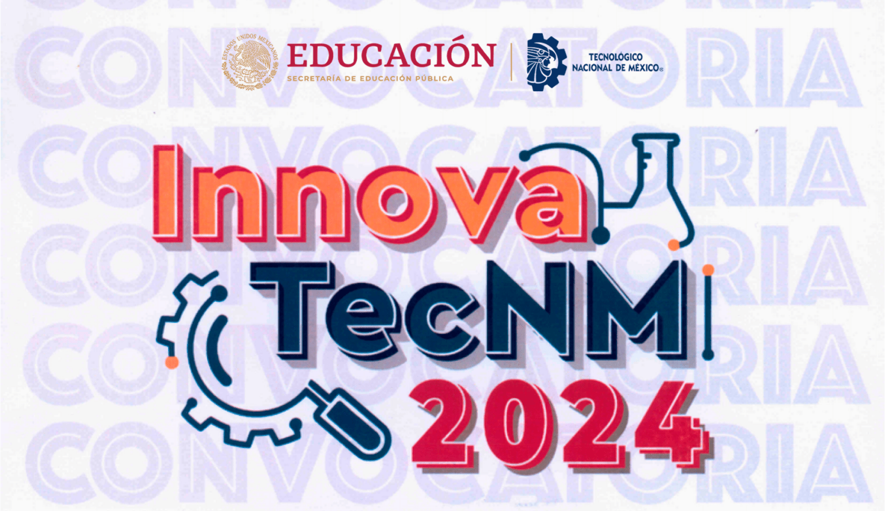
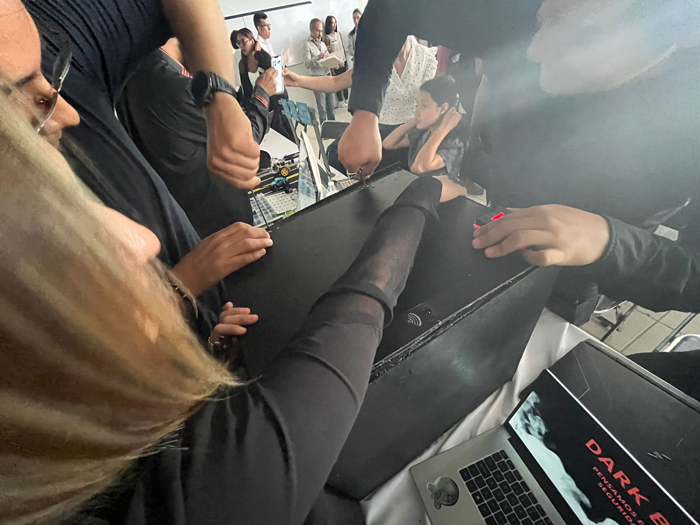
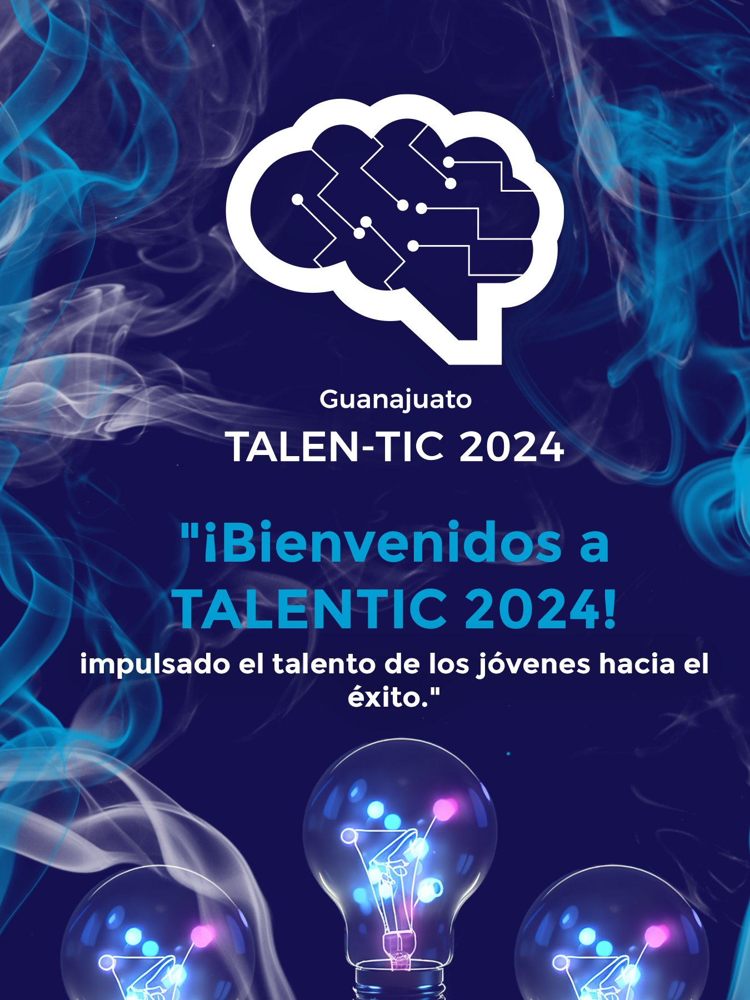
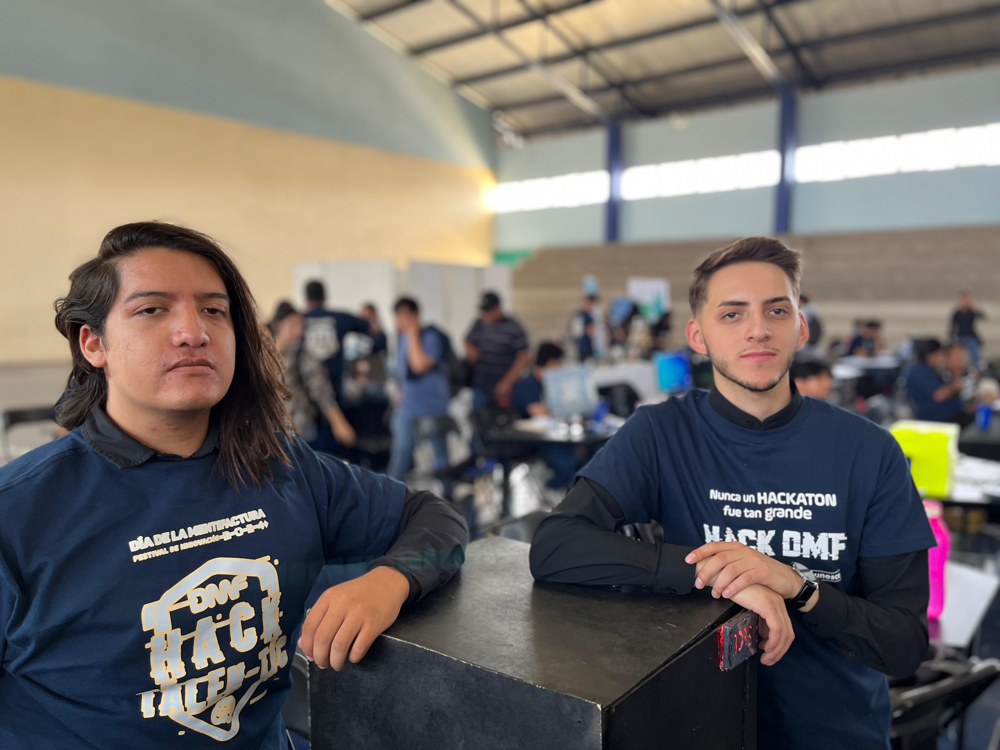
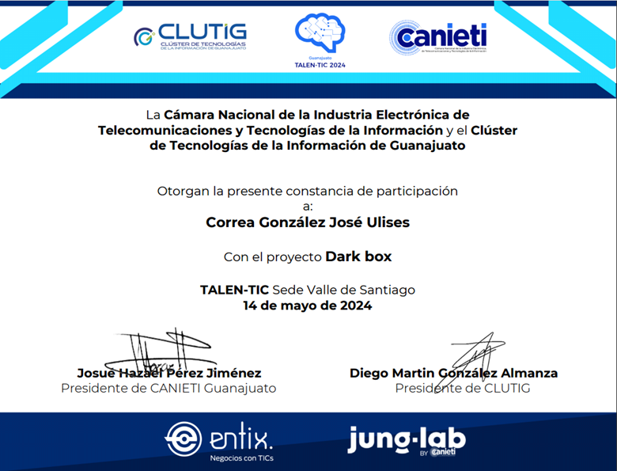
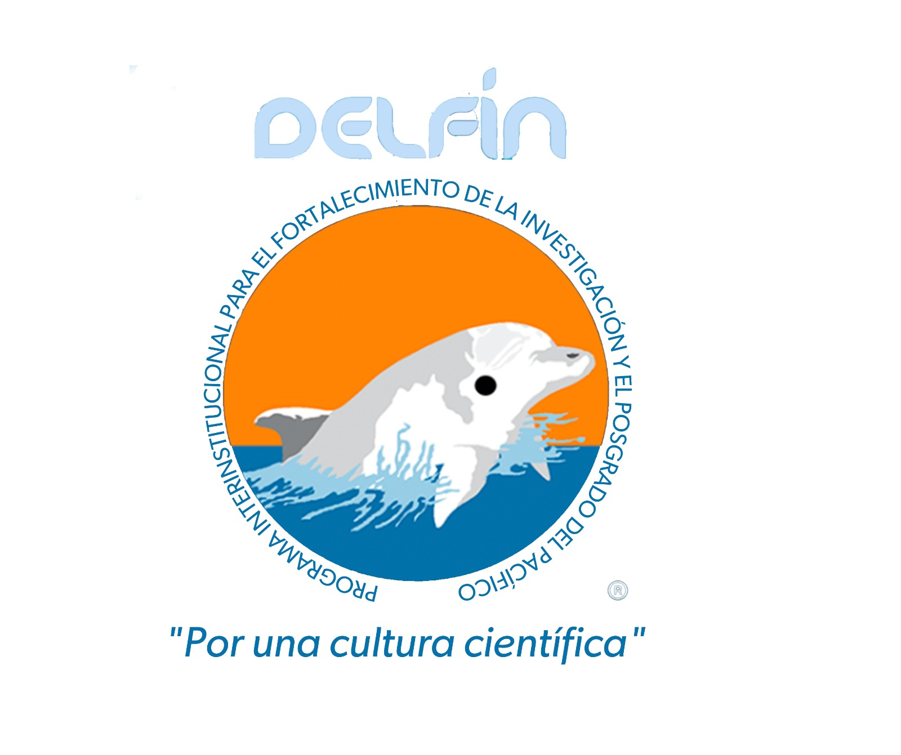
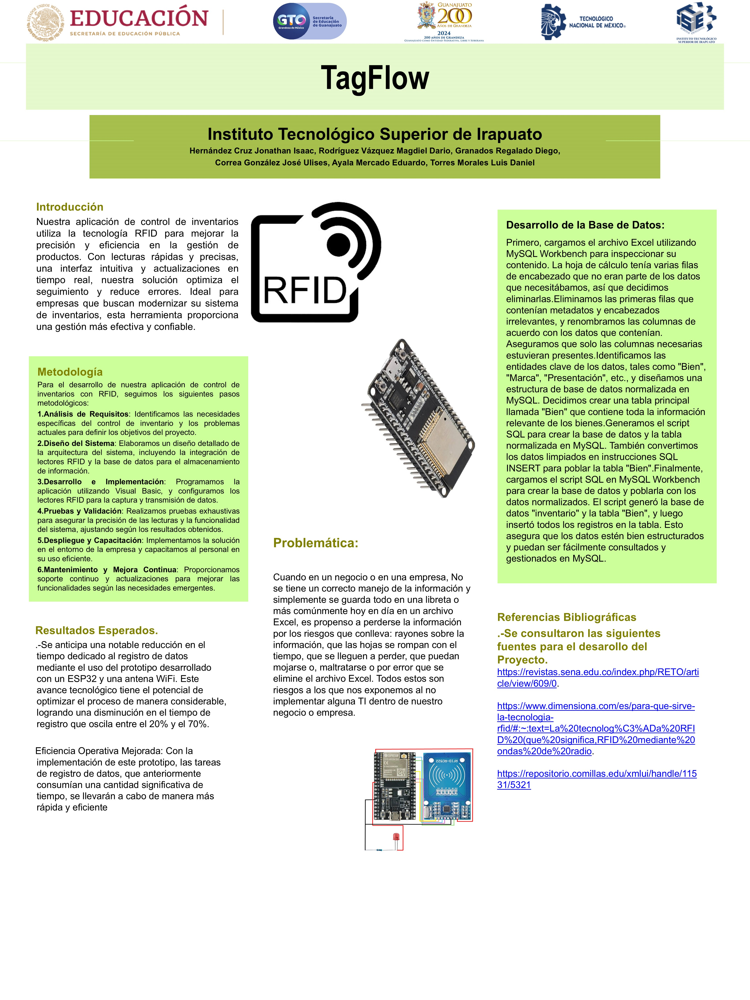

Highlighted Projects
These projects were presented at academic and technology events:
- Delfín Research Program: National research program where students collaborate with researchers from recognized institutions.
- InnovaTecNM: National competition promoting innovative projects with industrial and social impact.
- TalenTIC: University technology event focused on IT-based solutions with real-world applications.
2024: Dual Verification Safe System (DarkBox)
Security system combining a web interface with RFID technology for dual authentication. The safe unlocks only when the correct password and an authorized RFID card are provided. The system also allows password updates using the card UID.
Presented at: TalenTIC 2024 & InnovaTecNM 2024





RFID-Based Tracking System (TagFlow)
Smart tracking system using RFID technology to automatically register the movement of parts. It eliminates manual data entry by capturing UID information, improving operational efficiency and traceability.
Presented at: Delfín Research Program 2024

